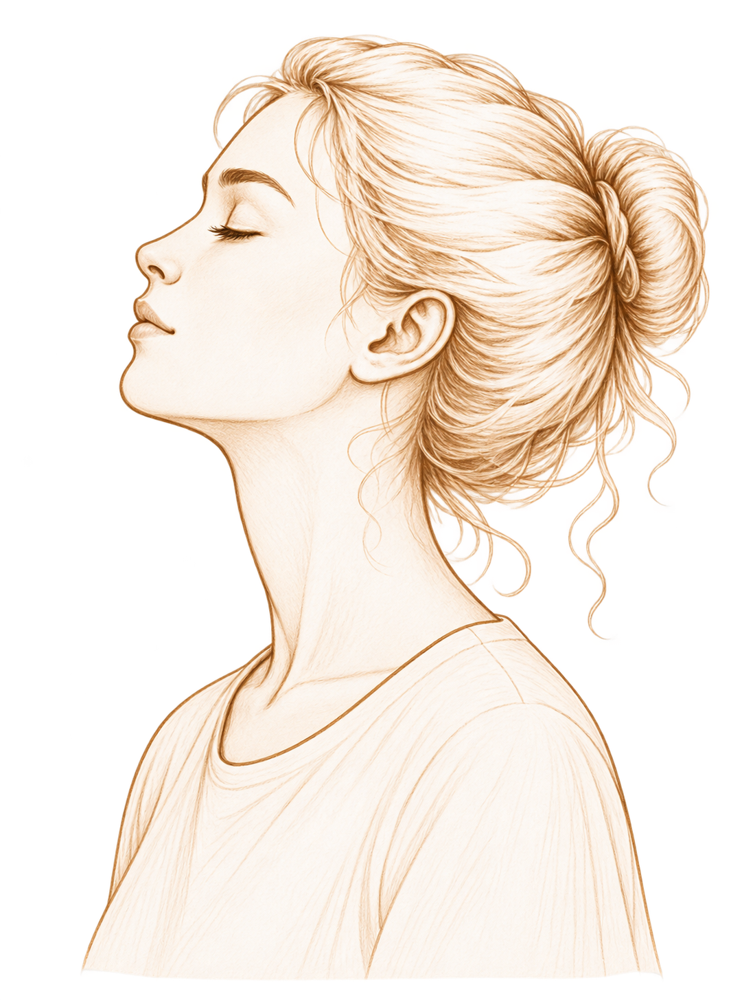
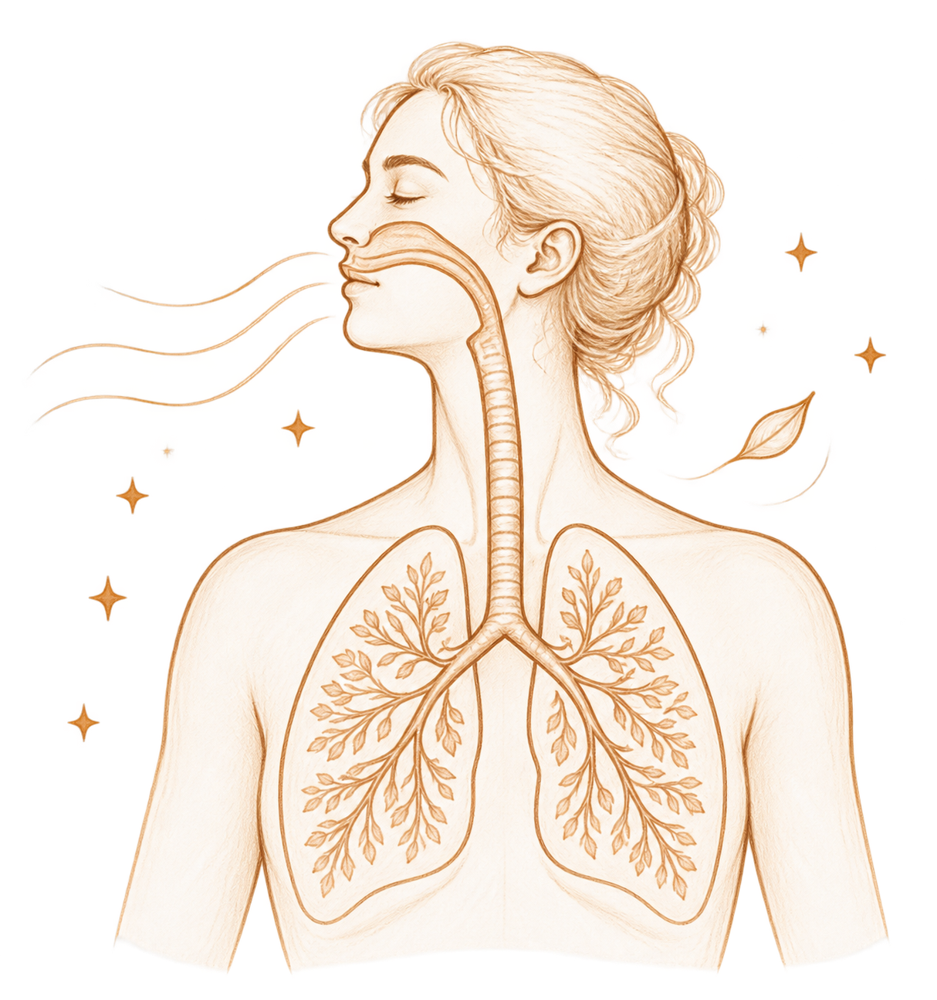
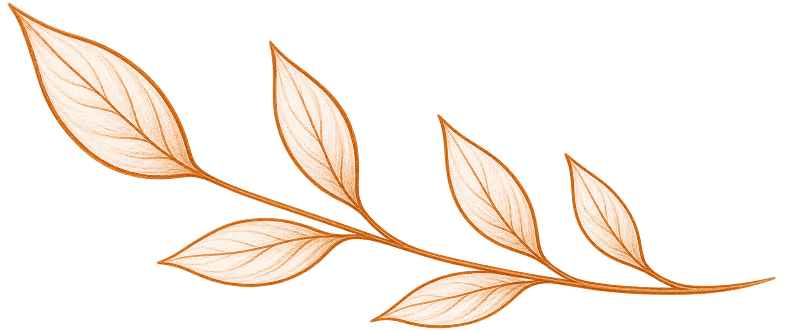
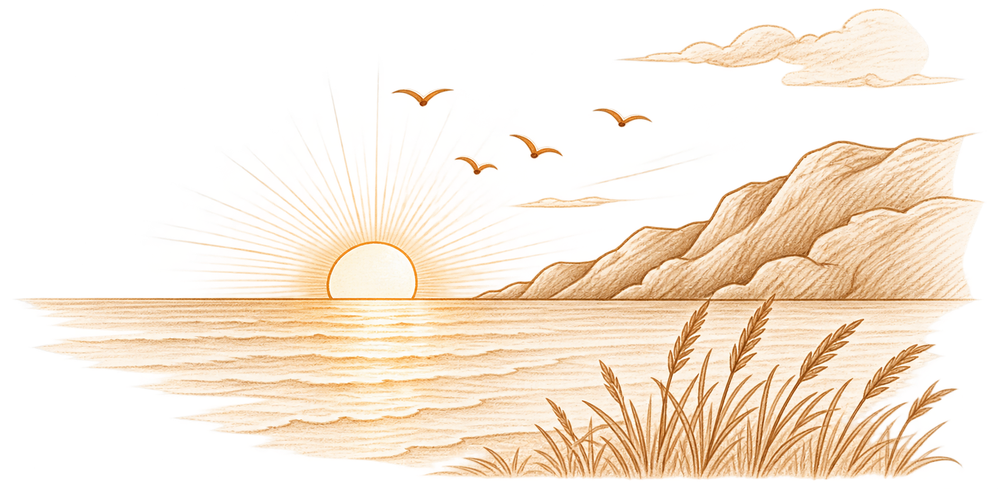

Попробуйте прямо сейчас заметить своё дыхание.
Не менять его. Не делать глубже. Не считать вдохи.
Просто обратить внимание.
Возможно, вы почувствуете, как воздух проходит через нос. Как слегка поднимается грудь или живот. А может быть, первым появится желание тут же вдохнуть глубже.
Ещё секунду назад дыхание происходило само собой. Но стоило направить на него внимание — и оно словно вышло из фона.
Мы редко думаем о дыхании, пока оно идёт своим привычным ритмом. А ведь оно постоянно меняется вместе с нами: когда мы спешим, волнуемся, смеёмся или засыпаем.
Почему дыхание меняется,
когда мы думаем о нём?
Наверняка вы замечали: стоит вспомнить о дыхании — и оно становится чуть глубже или неровнее.
Когда мы начинаем наблюдать за привычным процессом, нам иногда хочется вмешаться. Мозг словно спрашивает: «Раз уж мы обратили на это внимание, может, что-нибудь сделать?»
Но дыхание не всегда нужно исправлять.
После быстрой ходьбы оно будет одним, перед сном — другим, во время разговора — третьим.
Дыханию не всегда нужно помогать. Иногда достаточно просто дать ему быть.
Мы дышим — и можем это замечать
Большую часть времени дыхание не требует нашего участия. Но мы можем в любой момент обратить на него внимание — задержать вдох, выдохнуть медленнее или просто прислушаться к своему ритму.
Когда мы замечаем дыхание, внимание ненадолго переключается с внешнего мира на тело. Это связано с тем, как мы воспринимаем внутренние сигналы организма.
Но заметить — не всегда значит сразу понять.
Иногда мы вдруг думаем: «Как-то я часто дышу». А иногда только в этот момент понимаем, насколько устали или напряжены.

Один вдох может вернуть нас в настоящий момент
Когда голова занята десятком мыслей, дыхание оказывается чем-то очень конкретным.
Вот вдох. Вот выдох.
Замечая телесный сигнал, мы на мгновение переключаем внимание с бесконечного внутреннего диалога на то, что происходит прямо сейчас.
Иногда этого достаточно, чтобы почувствовать себя чуть собраннее. А иногда — заметить, насколько много всего накопилось за день.
И оба варианта нормальны.
Если начать дышать медленнее?
Спокойное, медленное дыхание у некоторых людей может помочь почувствовать расслабление. Но несколько глубоких вдохов — не универсальное решение для любой тревоги или усталости.
Иногда после них становится спокойнее.
А иногда — почти ничего не меняется.
Не каждое ощущение нужно исправлять.

Мы замечаем дыхание по-разному
Кто-то чувствует дыхание в груди. Кто-то — в животе. А кто-то, когда его просят сосредоточиться на дыхании, начинает думать только о том, достаточно ли хорошо он это делает.
Но здесь нет правильного результата.
У нас нет одинакового способа чувствовать своё тело.
Внимание к дыханию — не экзамен. Не нужно замечать каждый вдох и делать его идеальным.

Иногда достаточно просто вспомнить, что мы дышим
Не обязательно ждать от этого большого эффекта.
Иногда вы заметите дыхание и через минуту снова забудете о нём. Иногда спокойный выдох поможет немного замедлиться.
А иногда именно в этот момент вы поймёте, что устали, торопитесь или давно не делали паузу.
Внимание к дыханию не обязательно что-то меняет.
Но иногда оно помогает заметить то, что уже происходит.
И, возможно, этого вполне достаточно.
